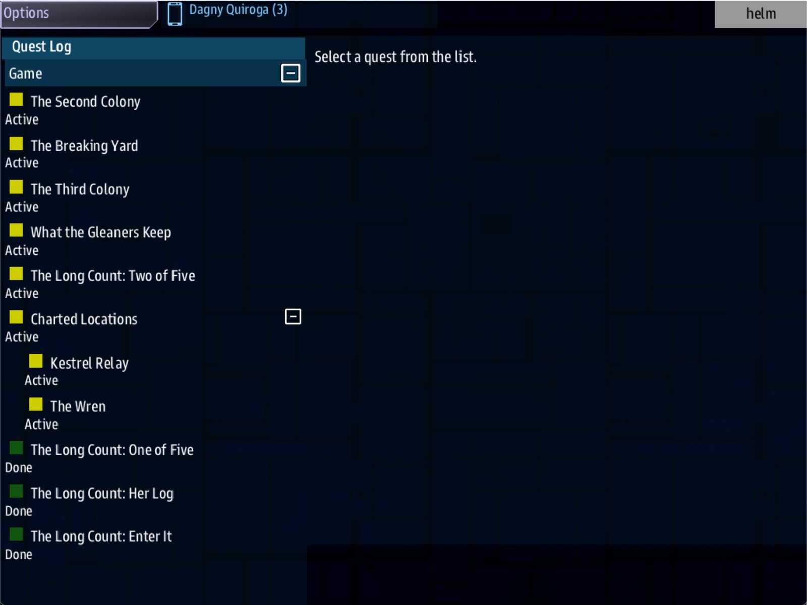

Class 6, Lecture 3 - Designing a session¶
What you will have at the end¶
One whole evening of your campaign, with a shape. The crew is told where a boat is. They jump, and find her with ships already cutting her up. They read her log, by fighting or by nerve. They carry it home, and the last thing they read before the game closes is where the second boat was last heard.
Open, objective, climax, hook. Four parts, three records and one line on a landmark.

The end of evening 1: Two of Five open, and three steps of The Long Count under Done.You write one section in campaign.md, change one record and one landmark, and add
three records.
The video¶
About 5 minutes. Subtitles are available in the player.
Before you start¶
- Your
MyUniversemission as Lecture 1 left it:campaign.md, and akestrel_verge.amdwith The Wren and One of Five in it. (If you took Lecture 2, your file has its three lines and two records as well. Nothing here changes.) sbs lint MyUniversesaysclean.- The game closed, and the save deleted:
C:\Cosmos\data\missions\common_data\saves\universe_save_the_kestrel_verge_1.yaml.
Words for this lecture:
| Word | Meaning |
|---|---|
| Open | The first minutes: where the crew is told to go, and why tonight |
| Objective | The one thing the crew has to do there |
| Climax | The moment the evening could go wrong |
| Hook | The last thing the crew learns, which is the reason to come back |
| Sheet | A short table in campaign.md with one evening on it |
Step 1 - The four parts of an evening¶
Storm's Beacon's makers wrote their episode down as five moves: arrive, investigate, complication, resolve, clue. Folded into an evening at a table, that is four parts.
| Part | What the crew is doing | What you write | In a 35 minute evening |
|---|---|---|---|
| Open | Reading the lead, deciding to go, jumping | A lead: a step that ends with reach |
5 |
| Objective | The work of the evening | A step that ends with a deed: a scan, a kill, a call | 15 |
| Climax | Dealing with whatever is in the way | Something at the place. Today, Guards: on the landmark |
10 |
| Hook | Going home, being paid, reading what is next | A step that ends at home, and the next lead | 5 |
The minutes are a plan, not a measurement. Nobody can tell you how long your crew takes to scan a lifeboat. Write a number down anyway. In Lecture 8 you will time a real table against it.
The game has no idea what an evening is. There is no end-of-session screen, no recap of last week, no timer that stops play at 45 minutes. Everything on that list you do yourself, with the shape of the episode:
| You want | The game has no such thing, so |
|---|---|
| The evening to end | The last step ends at home. When it is done, you say "that is tonight" and close the game |
| A recap next week | The open lead is the recap. Its text is the first thing in the Quest Log after Continue. Write it so it reminds them |
| A time limit | Your watch. If the objective is not done at 30 minutes, tell them the Compact is calling them home, and let them come back to it next week. The step stays open in the save |
Step 2 - The sheet¶
Open campaign.md. At the end, add a section for the evening. This is the sheet. You
will write one for every evening of the campaign, and this is the longest it ever needs
to be.
## Evening 1 - One of Five
| Part | What happens | The record | Minutes |
|---|---|---|---|
| Open | The Compact has a fix on a boat at (2, 2). The crew jumps | `s01_go` | 5 |
| Objective | Read the Wren's log. Science scans her | `s01_scan` | 15 |
| Climax | Three ships are already cutting her up. Fight them, or scan and run | `Guards:` on `the_wren` | 10 |
| Hook | Home to Kestrel Relay. The log names a second boat, the Dunlin | `s01_home`, then `s02_go` | 5 |
- **The crew learns:** the boats were launched. Nine people were in this one.
- **It pays:** 300 credits, at home.
- **Who is busy:** Helm for two jumps, Science for the scan, Weapons if they stay to fight.
- **It ends when:** the ship is home and Two of Five is in the Quest Log. Close the game there.
- **Played in:** ___ minutes. (Fill this in after the first table plays it.)
Write the sheet before the records. If you cannot fill in "The crew learns", the evening is a trip, not an episode.
Step 3 - The open¶
Open kestrel_verge.amd and find ### [The Long Count: One of Five](s01_go). Add one
line to its fence, under Done when:.
### [The Long Count: One of Five](s01_go)
---
Scope: shared
Starts when: at once
Done when: reach 2, 2
Then: reveal s01_scan
---
The Tern carried five boats and forty-one people. When the Compact found her, forty years late, every davit was empty.
A prospector has sold the Compact a fix on one boat, at (2, 2). Go and find her.
A boat that was launched had somebody in it. The Gleaners strip every dead hull in the Verge, so be there before they are.
Then: reveal is the line from Class 5 Lecture 7. When this step is done, the next one
appears.
Step 4 - The objective¶
Under that record, add the step the evening is about.
### [The Long Count: Her Log](s01_scan)
---
Scope: shared
Starts when: revealed
Done when: scan 1 derelict
Then: reveal s01_home
---
The Wren is here, and so are ships with cutting gear. Get Science close enough to read her log before they strip it.
Two things to know about this ending. Both were measured.
Any dead ship in the system counts. The game scatters derelicts of its own. In the galaxy this page was measured in, it had put one at (2, 2) as well, and scanning that one finished the step. Your galaxy is rolled from a different seed. Write the text so that either reading is true: "read her log" works; "scan the Wren and nothing else" would be a promise the game does not keep.
The step is hidden until the crew arrives. A crew that scans a derelict somewhere else, earlier, has not done it. Class 5 Lecture 7: a hidden chapter cannot be finished.
Step 5 - The climax¶
The climax is not a step. It is something at the place. Find ### [The Wren](the_wren)
in your Landmarks chapter and add one line.
### [The Wren](the_wren)
---
At: 2, 2
Prefab: derelict
Terrain: asteroids
Guards: torgoth
---
A lifeboat off the Tern, cold for forty years. Her davit number can still be read: one of five.
Measured: when the ship arrives, three ships of the raiders' side are at the Wren, and
the crew is shown a card that reads The Wren is guarded - hostiles on approach. Three
is what the game sends at Difficulty 5.
Why the fight is not a step: nothing in the Quest Log says "destroy them". So the crew has a real decision. They can fight three ships. They can scan under fire and run. They can leave and come back next week, and the guards will be there again. A climax the crew can answer three ways is worth more than one they can only answer by shooting.
Lecture 4 writes the other kind, where the fight is the objective.
Step 6 - The hook¶
Under Her Log, add the way home, and next week's lead.
### [The Long Count: Enter It](s01_home)
---
Scope: shared
Starts when: revealed
Done when: reach 0, 0
Then: reveal s02_go
Reward: 300 credits
---
Nine names in the Wren's log, and a course laid in for a place that is on no chart. Take the log home to Kestrel Relay and have it entered.
### [The Long Count: Two of Five](s02_go)
---
Scope: shared
Starts when: revealed
Done when: reach -2, 3
---
The Wren's log gives the next boat's last bearing: (-2, 3), past the edge of the Fields. She was the Dunlin.
Somebody out there is still answering her hails.
## The count so far
| Boat | Where | What we know |
|---|---|---|
| The Wren | (2, 2) | Launched, and empty. Nine names in her log |
| The Dunlin | (-2, 3) | Something answers on her channel |
Read those two as a pair.
Enter It ends the evening. It finishes when the ship is home, and it pays there. A crew that has just been paid, at their own station, is a crew you can send home.
Two of Five is the hook. It appears at the moment Enter It is done. Its text is the last thing the crew reads tonight. Next week, after Continue, it is the one open line of The Long Count in the Quest Log, so it is also the recap. Write it to do both jobs: a paragraph of what was found and where to go, a short one of what is strange about it, and a table of the count so far.
The table is the recap. A crew that has been away for a week reads it before they
read anything else. It is the table you met in Class 1 Lecture 11: a row of names, a row
of hyphens between bars, then one row for each boat. ## The count so far above it is a
heading, larger and gray, and it has no square brackets, so it stays part of the text
(Class 1 Lecture 8). Every open from now on carries the table forward and adds a row.
The Dunlin's landmark and the rest of her evening are Lecture 4. Today the lead is
enough. A lead with no landmark behind it lints clean and takes the crew to whatever
the game rolled at (-2, 3).
Step 7 - Check it¶
Save both files.
Each row below was made on purpose, one change to the finished files, then linted. Where the middle column says what the game does, it was played as well.
Mistakes lint finds
| The mistake | What the game does | What lint says |
|---|---|---|
The key misspelled after reveal: Then: reveal s01_scn |
Her Log never appears. The evening stops at the Wren with nothing to do | Two warnings. On One of Five: "Then reveals s01_scn, and no record has that key, so nothing is revealed" (dangling-reveal). On Her Log: "waits to be revealed, and nothing reveals it" (never-revealed) |
No Then: line on Her Log |
Not played | A warning on Enter It: "waits to be revealed, and nothing reveals it ... It never appears" (never-revealed) |
The hook left out: Enter It says Then: reveal s02_go and there is no such record |
Not played | A warning: "s01_home Then reveals s02_go, and no record has that key" (dangling-reveal) |
Then: show s01_scan |
Not played | Three warnings. The first says what is wrong: "show is not a Then: verb ... Then: takes reveal or signal or learn" (unknown-then-verb) |
Mistakes lint cannot see
Lint says clean for both of these.
| The mistake | What the game does |
|---|---|
Reward: 300, with the word credits left off |
The step is done, the next lead appears, and nothing is paid |
Enter It written with Starts when: at once |
It is done in the first second of the game, because the ship starts at home. Two of Five is open before One of Five has been touched. Nothing is paid |
So check by eye:
- Every
Reward:ends in the wordcredits. - Only the first step of the campaign says
Starts when: at once. Every other step of the spine saysrevealed.
Step 8 - Play it¶
- In the
helmwindow, open the Quest Log. The Long Count has one line, One of Five. Her Log and Enter It are not there yet. - Engage One of Five. The card reads The Wren, and then the warning that she is guarded.
- The Quest Log now has The Long Count: Her Log.
- In the
sciencewindow, select The Wren and scan her. Her Log showsDone, and Enter It is in the list. The side has 150 credits more as well: the game pays salvage the first time a wreck is scanned. That is the game's, not your story's. - Engage Enter It. The ship is home. The side has 300 credits more, and The Long Count: Two of Five is in the list.
- That is the evening. Close every window of the game.
- Type the same line again. The Quest Log has Two of Five open, and the three steps of evening 1 under Done.
[Not seen in the real game: how near the ship must be for Science to scan the Wren, and whether the scan finishes by itself when she is in sensor range. If it does, the crew still has to get there through three ships, and the evening holds. Time it.]
What you need to know about an evening
| Fact | What it means for your story |
|---|---|
| The game does not know what an evening is | You end it. Make the last step end at home, and stop there |
| A step done tonight is done for good | The crew can stop after any step. Next week they start at the next one. An evening that runs long is two evenings |
| The hook is a lead, and a lead is a step | It is in the save. After Continue it is still open, with its text. That is your recap |
| Guards that were not destroyed are there again next time | A crew that scans and runs has not cleared the Wren. If they come back, so have the three ships |
| The reward is paid when the step is done, once | 300 credits a week is the campaign's wage. Lecture 6 spends it |
If something goes wrong¶
| What you see | Likely cause |
|---|---|
| Her Log never appears | One of Five has no Then: reveal s01_scan line, or the key after reveal is spelled differently from the record's. Run lint |
| Her Log is in the list from the start | It says Starts when: at once. It should say revealed |
| No ships at the Wren | The landmark has no Guards: line, or the word after it is not one of the six kinds of ship |
| The scan does nothing | Her Log is not open yet. The crew scanned before arriving, or One of Five is not done |
| The ship is home and nothing was paid | Enter It was not open: Her Log is not done |
| Two of Five does not appear | Enter It has no Then: reveal s02_go line |
Exercise¶
- Write the sheet for your own evening 1. Fill in "The crew learns" first.
- Give your landmark something in the way. Guards are one answer. A nebula the crew
must search is another:
Terrain: nebula. - Write the three records: open, objective, home. Number the keys
s01_. - Write next week's lead as the hook. Read only that record aloud. Would you come back?
- Lint, play it to the hook, stop, and continue.
- Put a watch on the table while you play it alone, and write the minutes on the sheet. It will be far too short. A crew of five takes several times as long as a writer who knows the answer.
Checkpoint¶
You are done when all five are true:
campaign.mdhas a sheet for evening 1, with every row of the table filled in.sbs lint MyUniversesaysclean.- At the start, the Quest Log shows one line of your campaign, not three.
- The evening ends at home, with a reward and a new lead.
- After Continue, that lead is still open.
Next¶
Lecture 4 turns this evening into a pattern you can fill in, and uses it to write evening 2 in a quarter of the time.
Further reading¶
- Class 5 Lecture 7, "Narrative and goals":
Then: reveal, and why a hidden chapter cannot be finished. - Class 5 Lecture 5, "The map":
Guards:andTerrain:on a landmark. - Class 1 Lecture 9, "Chains and trees": the same chain in a mission with one map.
Download this lecture's finished files (a zip of its example folder).